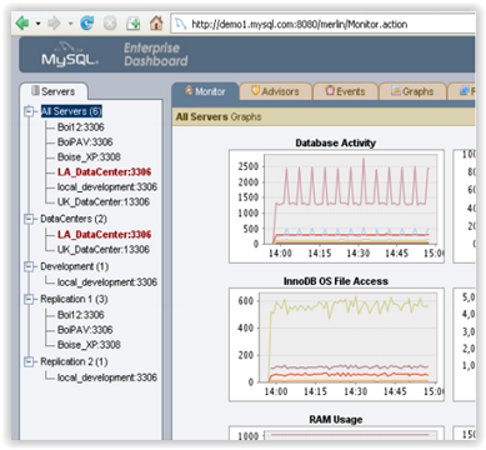
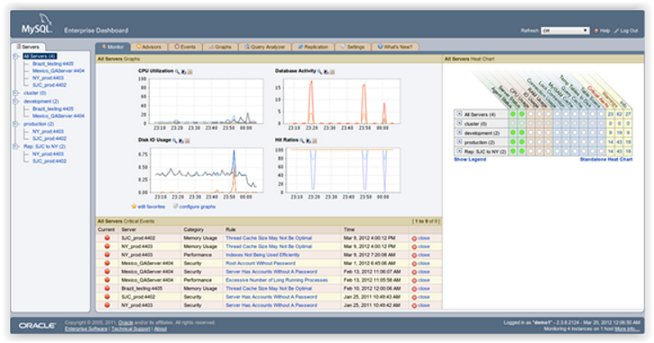
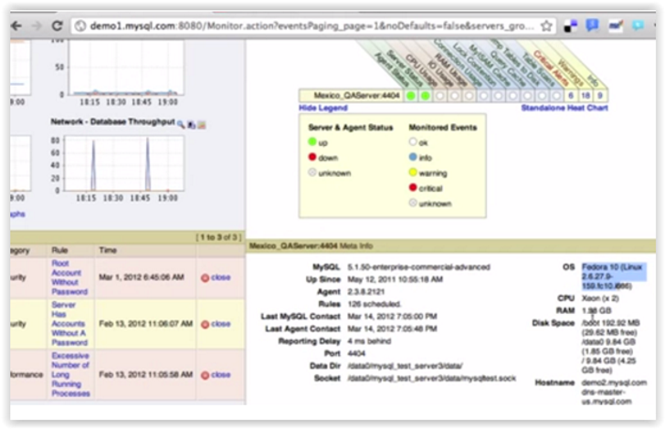
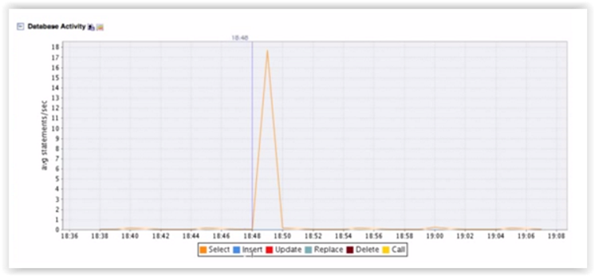
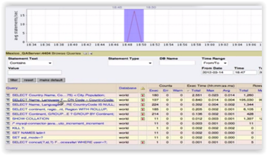
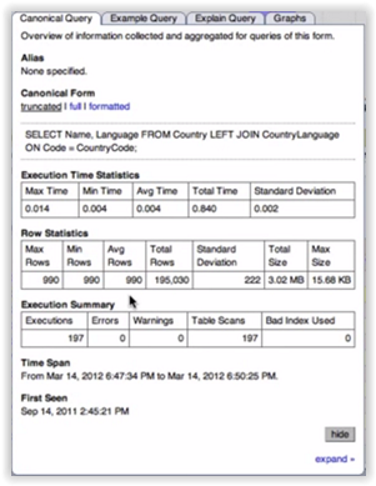
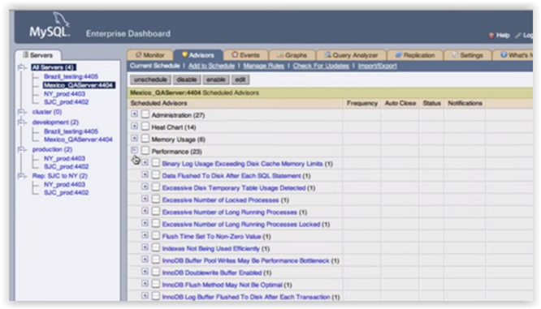
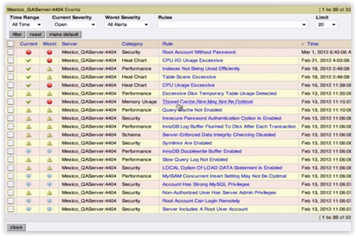
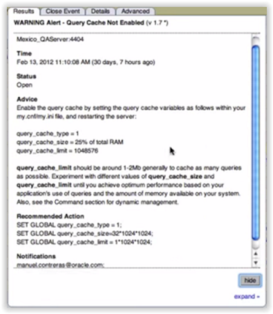
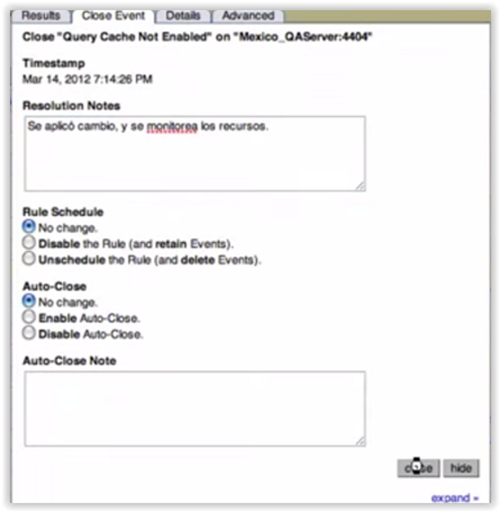

UD1 - Actividad 4 - Enunciado
Pulsa aquí para visualizar: UD1 - Actividad 4 - Enunciado
UF2215. UD1. Actividad 4. Ejercicio teórico-práctico: Enterprise Monitor para administración de datos
Enunciado (Descripción)
Existen en cada SGBD herramientas avanzadas como en el caso de MySQL Enterprise monitor que facilitan la automatización y control de los servidores sin necesidad de recurrir a la programación.
A continuación nos centraremos en el funcionamiento de la aplicación Enterprise Monitor. Se trata de un programa que viene en la versión Enterprise de MySQL y que se puede conseguir registrándose en la página de Oracle MySQL mediante un año de suscripción.
Para entender mejor su funcionamiento responde a las siguientes cuestiones:
Preguntas / Actividades a realizar
Pregunta A. ¿En qué crees que consiste la arquitectura Enterprise Monitor?

Pregunta B. Supongamos que hemos accedido a nuestra aplicación con el Login del Usuario administrador y hemos elegido un servidor de la lista de servidores (All Servers).

En la pestaña Monitor se nos informa si hay algún warning (Critical Events), si todo está operando correctamente o no con respecto a temas de CPU, RAM, Cache, BIOS etc.

Además puedo observar las características del servidor: versión del servidor, desde cuando está en ejecución, el puerto al que está conectado, el Socket, etc.
También puedo visualizarlas donde se encuentre instalado dicho servidor como sistema operativo usado, espacio en disco, etc.

Por otro lado en la pestaña Graphs puedo ver qué actividad tiene nuestra base de datos así como observar todos los parámetros de configuración de MySQL.

Conociendo todo lo expuesto anteriormente responde a las siguientes cuestiones:
Pregunta B1. ¿Cómo podemos en la aplicación Enterprise Monitor ver los signos vitales de un servidor? ¿En qué consiste el Enterprise dashboard?
Pregunta B2. ¿Dónde puedo ver cuántas conexiones están activas y cuantas se abortaron así como los SELECT, INSERT, UPDATE que se han ido generando en cada momento?
Pregunta B3. Si seleccionamos sobre cualquier gráfica el pico estimado sobre una fracción de tiempo determinado donde queramos revisar la actividad de las consultas que se han ido produciendo en dicho momento, automáticamente la aplicación Enterprise Monitor nos abrirá la pestaña Analizador de Consultas (Query Analyzer).

De tal manera que si seleccionamos una consulta determinada dicha herramienta nos informará sobre cuanto tiempo demoro su ejecución, si se usaron índices correctamente y que número de ellos se usaron, cual fue el usuario que la ejecutó.


¿Cómo podemos detectar que consultas son susceptibles de optimizar usando este Analizador de consultas?
Pregunta B4. En la pestaña Advisors podemos observar una serie de reglas Performance. Si marcamos estos Perfomance y le hacemos clic en enable se nos va a mostrar una serie de eventos en la pestaña Events.

De tal manera que se va a comparar estas prácticas recomendadas (advisors) con la configuración de nuestro servidor y se van a generar una serie de eventos. Tal como podemos observar en la siguiente imagen:

Por ejemplo para la Rule llamada Query Cache Not Enabled tenemos la siguiente alerta:

Aquí se nos informa sobre las recomendaciones a aplicar y sobre los comandos a aplicar para resolver el problema.
Además posteriormente podemos usar la pestaña Close Event para especificar que se aplicó tales cambios en lo que se conoce como Resolution Notes.

¿Qué crees que hace el monitor en base a estas reglas advisors?